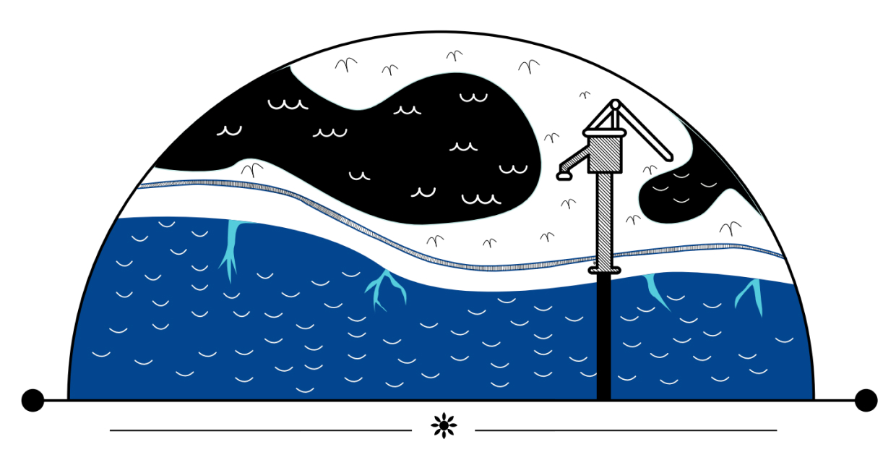
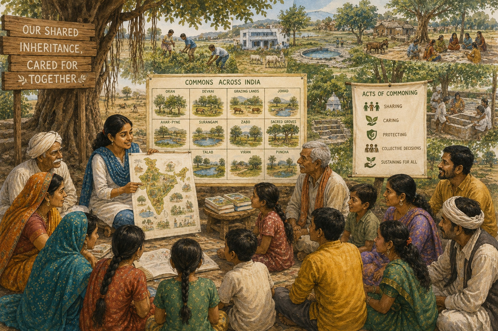
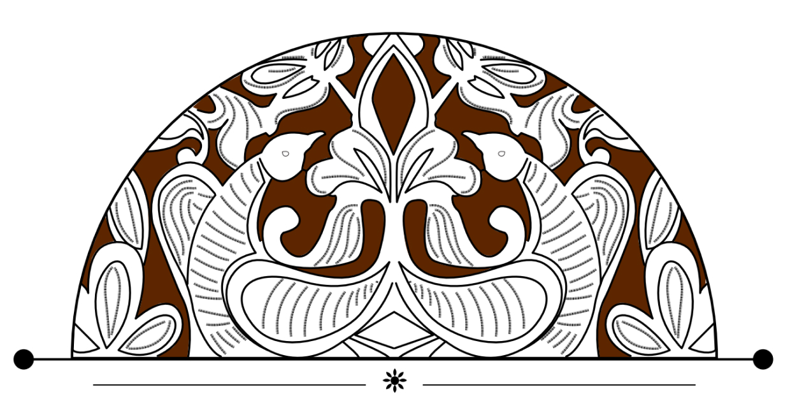
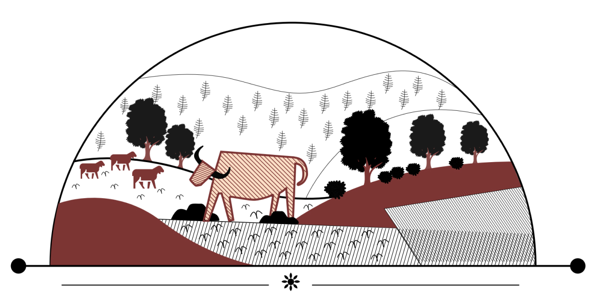
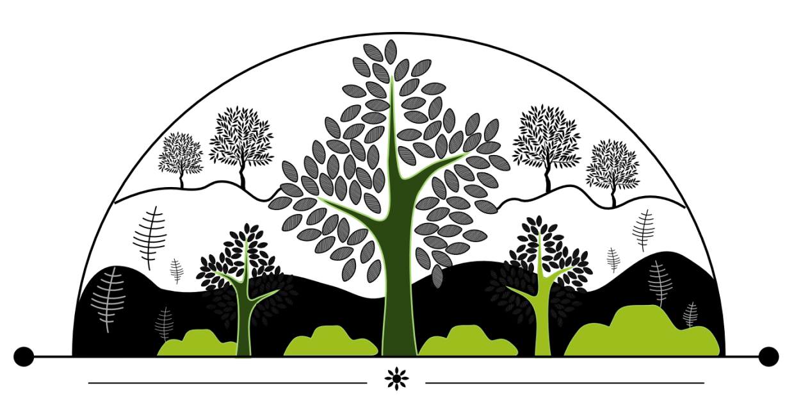
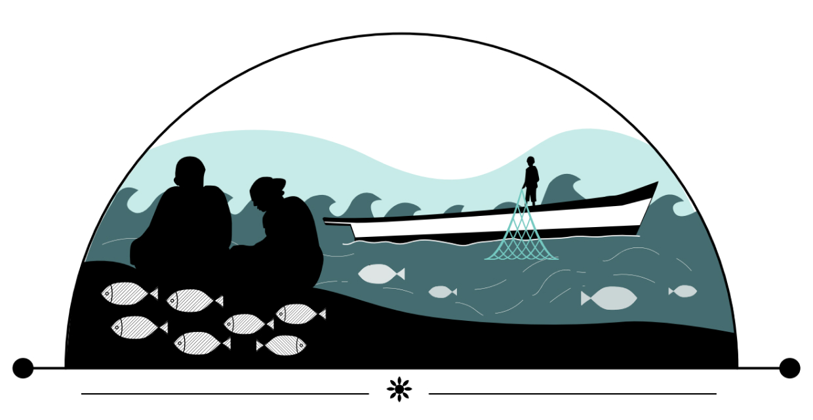
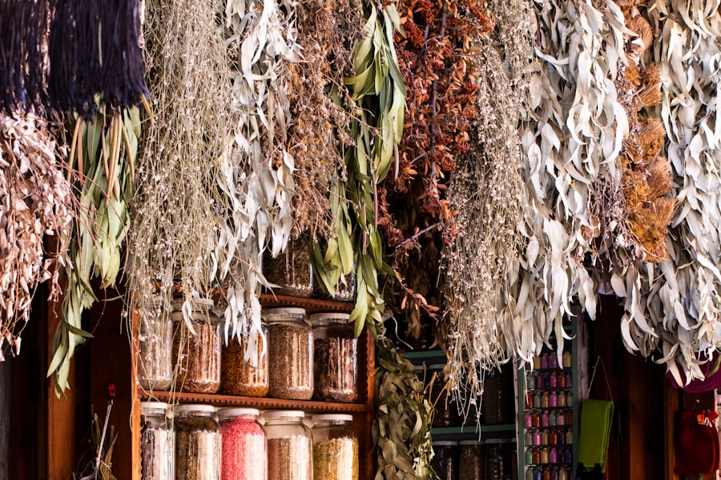

Conversionof Commons
When shared resources are diverted to other use
Browse topics
A community forum for commoners across India — a place to share knowledge, ask questions and document the customary practices that keep forests, pastures, water bodies, coasts and cultural commons alive.
Fresh questions and stories from commoners across the country — join the conversation.
Every topic on Indian Commoner sits within one of these themes — pick one to browse its discussions.

When shared resources are diverted to other use
Browse topics
Oral epics, festivals and shared traditions
Browse topics
Small shared spaces that sustain biodiversity
Browse topics
Customary rules and institutions of care
Browse topics
See the full list of forum themes
View allVideos, podcasts, literature, news and laws — everything the commoning community has gathered in one place.
From the pastures of Rajasthan to the sacred groves of Meghalaya — commoners in 17 states are already part of this forum. Add your voice.

The people behind Indian CommonerA small team moderates themes, curates resources and supports commoners in sharing their knowledge.
See the teamStart a topic in the forum, upload a resource, or simply introduce yourself to fellow commoners. Every voice adds to the record of India's commons.